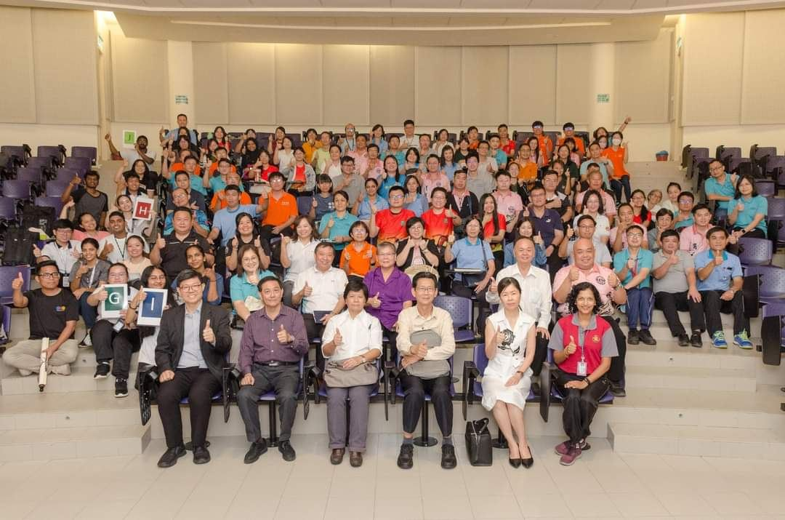
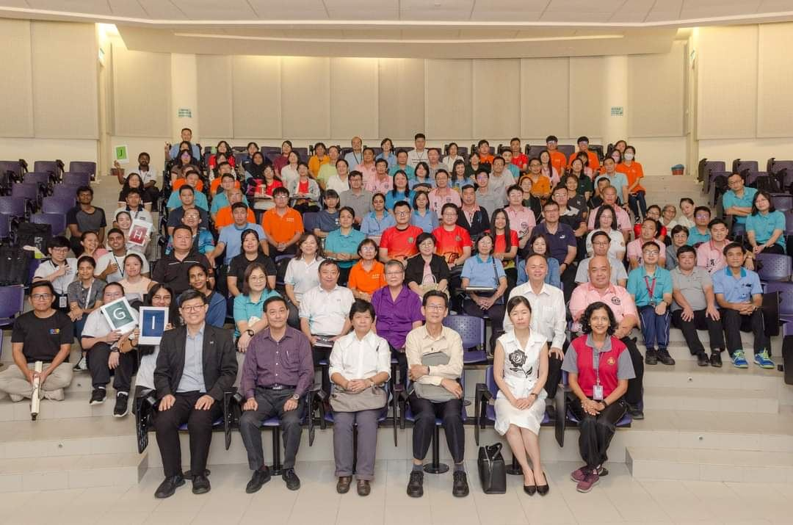
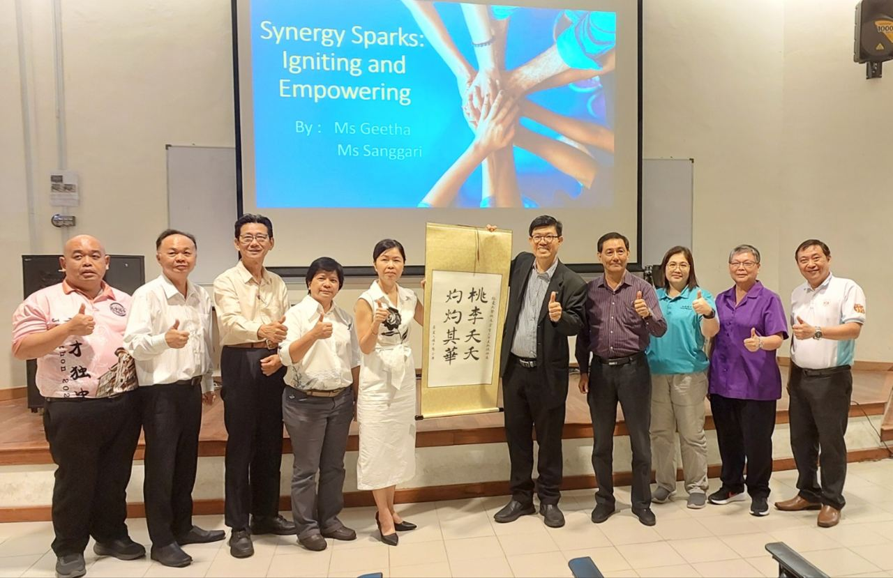
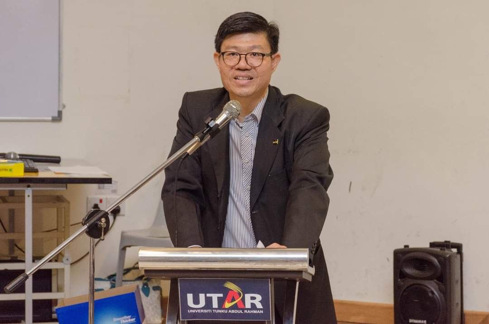
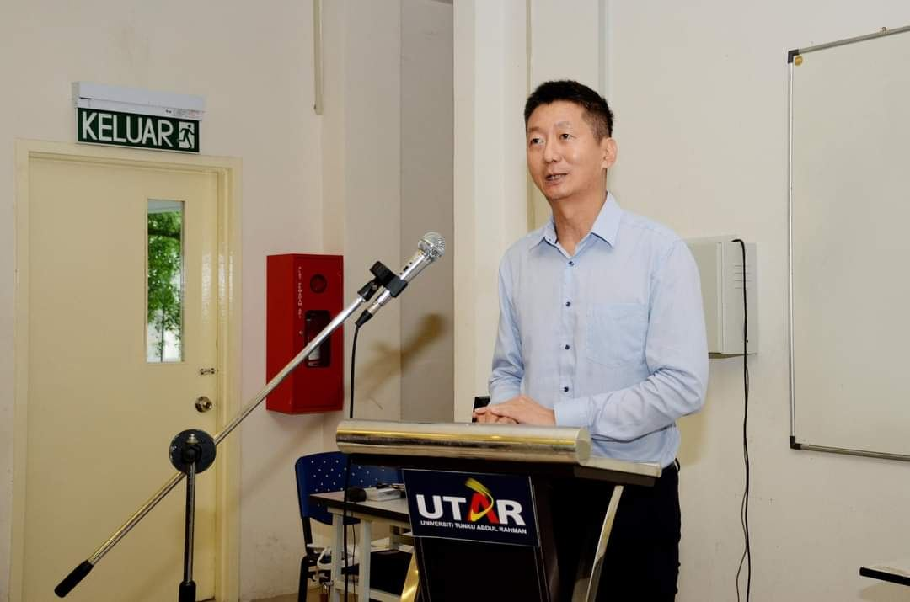
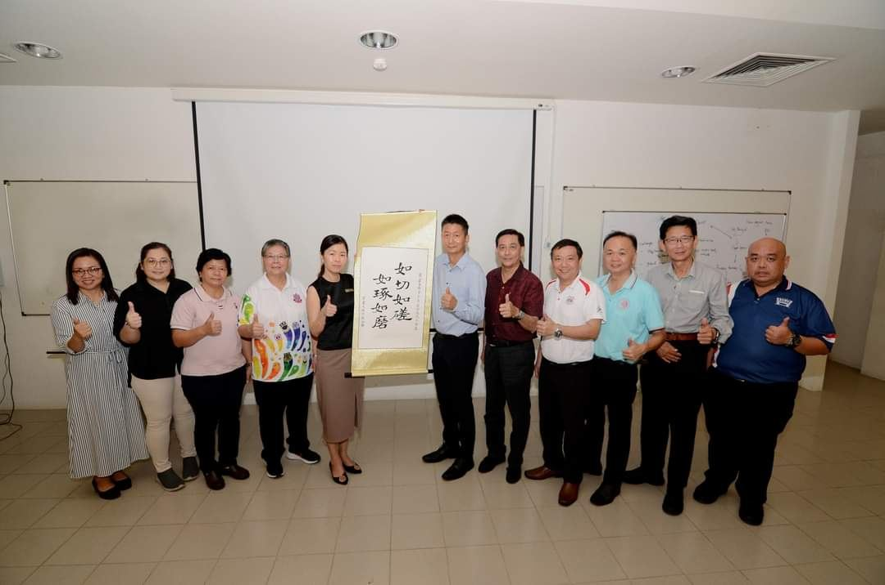
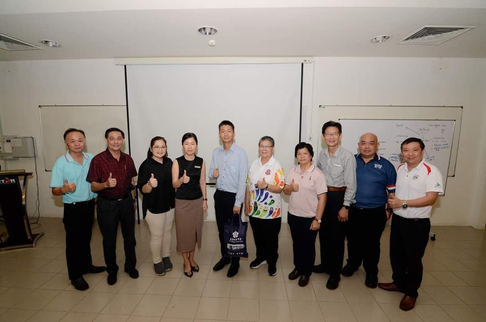

开创教育管理新篇章
开创教育管理新篇章
独中行政人员参与领导力培训
霹雳华校董事会联合会（霹雳董联会）主催，霹雳九独中首次联合主办的九独中行政人员培训工作坊于日前在拉曼大学圆满落幕。此次活动汇聚了霹雳州九所独中以及来自关丹中华独中的93名行政人员，旨在提升学校管理团队的专业能力，应对教育变革带来的挑战。
此次培训工作坊课程不仅是对独中行政管理现状的深刻反思，更是面向未来的积极行动。两天的密集课程内容丰富，涵盖了多个关键领域：第一天的课程以"协同激发：点燃和赋能教师团队"为主题，旨在提升行政人员的团队建设和激励能力。随后的"管理压力和培养内在幸福感"单元，则为参与者提供了应对高压工作环境的实用策略。第二天的培训聚焦于"新时代的领导力"，探讨了在快速变化的教育环境中，行政人员如何调整领导风格和决策方法。课程通过理论讲解、案例分析和互动练习等多种形式，帮助参与者将所学知识转化为实际管理技能。
拉曼大学副校长钟志强教授在开幕致辞中强调了行政人员的重要性。钟教授指出，在瞬息万变的教育环境中，高素质的行政团队是学校持续发展的关键，并强调行政人员不仅是学校运作的中枢，更是连接决策层和教学一线的重要桥梁。
南华独中校长陈丽冰博士代表九独中在致辞中深入分析了行政团队的三大作用：承上启下、纵横协调和引领示范。陈校长强调，行政人员是学校的中坚力量，在传达办学理念、协调内外资源和引领教育创新方面发挥着不可替代的作用，并呼吁九独中应该联合起来，通过系统培训和实践赋能，培养一支能够应对复杂挑战的专业化行政队伍。
霹雳董联会主席颜登逸先生在闭幕致辞中区分了领导与领袖的概念。他指出，此次工作坊的重要意义在于提升领导的素养与格局，培养真正的教育领袖。颜主席强调，领袖素养和格局的提升对推动独中教育发展至关重要。他表示，董联会未来将继续举办类似活动，促进九独中行政人员的持续成长与进步，同时也对于关丹中华独中的行政人员参与其中表示无任欢迎。
这次由霹雳董联会主办、东姑阿都拉曼大学协办的培训工作坊，不仅是对独中行政管理现状的深刻反思，更是面向未来的积极行动。通过两天的密集培训，参与者在团队协作、压力管理和领导力等方面获得了宝贵的知识和技能。通过此次的培训以打造一支高素质、专业化的独中行政团队，为霹雳州华文教育的长远发展奠定坚实基础。






